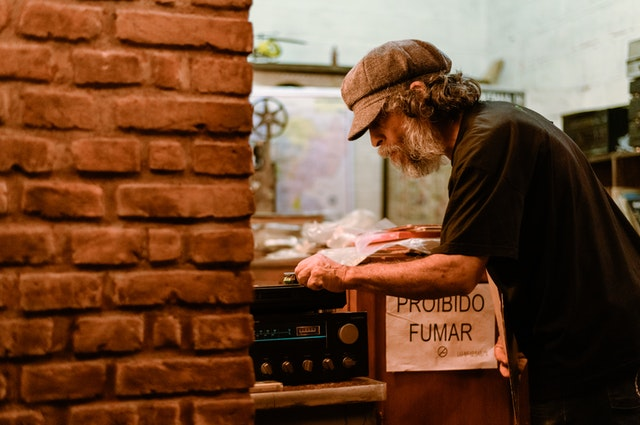
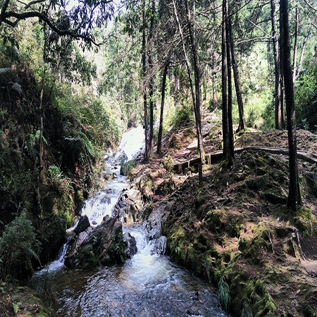

A life-long goal served as career guidance
Business advertisement

Time off from work led to creative freedom
Awareness comes from being top of mind
A routine task became a source of enjoyment
Desert tourism is blooming like deserts in spring, with ever more destinations
Code of Living

Le French

Nature Reserve